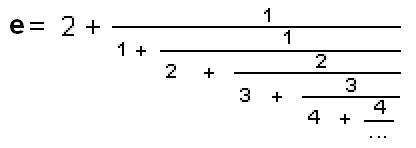
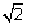

Continued & Infinite Continued Fractions/Chapter 8
Below is Grace's work on fractions to continued fractions, and continued
fractions to fractions in Chapter 8:
Can you make a continued fraction equal to 27/8 ?
Make a continued fraction, then find the simplest fraction equal to it.
6 May 2010 It's been a long time since I introduced a 9 year old to
continued fractions, and in the
process Sara did dividing fractions,
reciprocals, reducing fractions, changing an mixed number to an improper
fraction, drawing a picture of 2/3 and 1' 2/3, dividing and multiplying fractions
and using a TI-84 a TI-84- changing a fraction to a decimal and vice-versa and
writing a mixed number as an improper fraction on the calculator.
I gave Sara the continued fraction below; after a little thought, she said 3
1/5. It soon became clear to me that Sara didn't know how to divide
fractions, which was the first thing she needed to do: 1 divided
by 3 1/5. So instead of getting the answer to the original question, I worked on
the division 1 divided by 1/2. To set the stage I asked her how many 4's make
12, or 12 ' 4, which she knew was 3. Then I had her do 1' ' = 2 = 2/1, 1'
1/3= 3..Then I gave her 1' 2/3 for which I drew the 1 cake and she showed me
what 2/3 looked like and she figured out that there are 1 1/2 = 3/2 of the
2/3 in 1, so 1' 2/3 = 3/2. I told her the reciprocal of 2/3 is 3/2.
Then Sara
made up the problem 9' 6/8 and she figured out this would equal 12. I showed
her that for 9' 6/8, 1' 6/8 = 8/6, so 9' 6/8= 9x8/6 = 72/6 = 12 ( 9/1x8/6 =
72/6= 12) and this agrees with her answer. Sara was really excited about
dividing fractions and multiplying she knew. We didn't finish the problem, but
she learned how to divide fractions!
The next week, after a hug for Don, she finished the continued
fraction, getting 3 16/37 !
Fine job Sara!
I gave Maya the continued fraction below which was simpler than
the one I gave Sara.
Maya knew that 2+1/7 = 15/7, then she did the rest, 1'
15/7 = 7/15, and she finished the problem with 1+7/15 = 1 7/15.
Fine job Maya!
Solving a
quadratic equation by getting an infinite continued
fraction- method
#2 (see also solving a quadratic equation
10 ways on the map):
We can solve the quadratic equation x2 -
5x + 6 = 0 to get x =  .
.
We then take this function and in place of x we'll put
, since this is equal to x, and we
get  . Then we'll put
in for x again, and we get
. Then we'll put
in for x again, and we get  . If we keep doing that we get
an infinite
continued fraction. Jonathan, at age 7, did this at home with his Mom in CT,
using Don's original book. He got all excited about this being infinite! (He
came with his Dad for a week, in each of the next 2 summers).
. If we keep doing that we get
an infinite
continued fraction. Jonathan, at age 7, did this at home with his Mom in CT,
using Don's original book. He got all excited about this being infinite! (He
came with his Dad for a week, in each of the next 2 summers).
If you put 1 in the
first of these you get -1. If you put 1 in the second one you get 11. If
you put 1 in for x in the third one you get 4.4545.. You get an infinite
sequence which approaches 3, which is one of the two roots of the
original quadratic equation!
If
you start with -100, you would still get an infinite sequence approaching
3 as well. Notice, you only get the one root, 3, using this method #2
for solving the quadratic equation
x2
- 5x + 6 = 0.
Solving the same
quadratic equation x2 -
5x + 6 = 0 by getting an infinite continued fraction- method
#3:
Solve
for x another way to get:
x
=  then iterate
the right side to get and
so on to get an infinite continued fraction. You can also put a number in for x,
in ,
get the number out, put that number in for x, get a new number out, and continue
that way to get an infinite sequence.
then iterate
the right side to get and
so on to get an infinite continued fraction. You can also put a number in for x,
in ,
get the number out, put that number in for x, get a new number out, and continue
that way to get an infinite sequence.
Solving the same quadratic equation x2
- 5x + 6 = 0 by getting an infinite continued
fraction- method #4:
Solve for x another way to get:
x
=
then iterate
the right side to get
and so on to get an
infinite continued fraction.
Iterating
this same function
-6/(x-5) in Mathematica using NestList, starting with 5, doing 1000
iterations, showing 250 digits, and looking at the last one, we get an infinite sequence
that approaches 2, one of the roots of the original equation.
h[x_]:= -6/(x-5)
Take[N[NestList[h,5,1000],250],-1]
Power::infy: Infinite expression
\[NoBreak]1/0\[NoBreak] encountered.
{1.99999999999999999999999999999999999999999999999999999999999
9999999999999999999999999999999999999999999999999999999999999
99999999999999999999999999999999999999999999999999999998784283
8015208649994273601205071405411499043769607328752211168623914688150}
Notice, when it
uses 5, it gives "infinite expression encountered, then continues to do 999
more. I wondered what Mathematica did, so I started with 5 again, but
only did 6 iterations and looked at all of them:
N[NestList[h,5,6],10]
Power::infy: Infinite expression \[NoBreak]1/0\[NoBreak]
encountered.
{5.000000000,ComplexInfinity, 0,1.200000000,1.578947368,1.753846154,1.848341232}
Looking at the
6 numbers above, Mathematica showed the complexInfinity when 5 is put in
for x, then put 0 in for x, and then continued on as if nothing happened.
Hmmm.
Solve x2 - x -1 =
0 for an infinite continued
fraction:
| We got the infinite continued fraction for ', the golden
mean, from the equation x2 - x -1 =
0 .
We added x and 1 to both sides to get x2
=
x + 1. Then we divided both sides by x
to get
.
We then put
in
for x on the right side, to get
and
continued this process. to get the |
|
infinite continued fraction. On the way we graphed
,
and
on the same axes above.
Notice above, we are iterating the
function
The straight line and parts of 2 hyperbolas all intersect at the two points
(1.618, 1.618) and ( -0.618, -0.618), which are the 2 solutions of the quadratic
equation x2 - x -1 =
0 and are ' (the Golden Mean), and 1-' (see chapter 7). The infinite
continued fraction for ' is:
| An infinite continued fraction for 4/p,
by Lord Brouncker, circa 1658--see Olds
|
An infinite continued fraction for e, see chapter
11), by Euler, circa 1737- see Olds:
 |
Find the infinite continued fraction for 
(hint: start with x2 = 2, and x2
-1 = 1 and (x-1)*(x+1)=1 and solve for x on the left
side). Try this yourself.